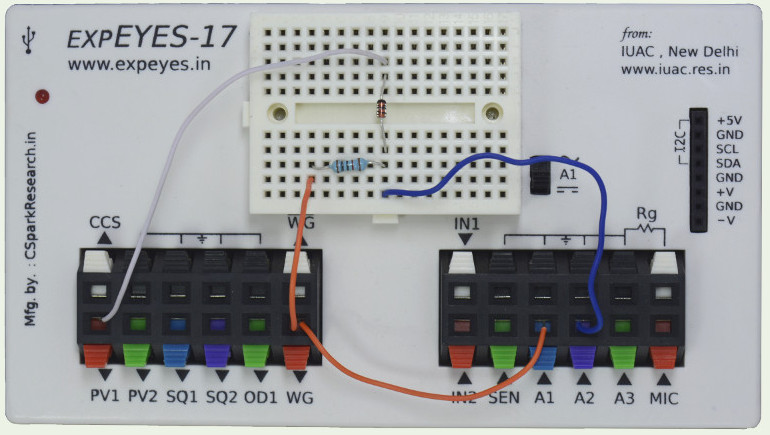

The waveform generator WG is set to give a sine wave of 1kHz. It is monitored by oscilloscope channel A1. The signal after the 1uF capacitor is monitored by A2. The DC voltage to clamp the sine wave is given from PV1, via a diode. Set the voltage range of A2 to 16 volts, because the voltage after clamping at 5 volts DC could be more that 8 volts.
|  | |
| Wiring Diagram | Photograph of the experimental setup |
 |
| Screen shot of the oscilloscope program showing inputs and output of Positive Diode Clamping. 1N4148 diode at 1000Hz. Load is the 1MOhm input impedance of channel A2. |
| import eyes17.eyes p = eyes17.eyes.open() from pylab import * p.set_sine(200) p.set_pv1(1.35) t,v, tt,vv = p.capture2(500, 20) # captures A1 and A2 xlabel('Time(mS)') plot([0,10], [0,0], 'black') ylim([-4,4]) plot(t,v,linewidth = 2, color = 'blue') plot(tt, vv, linewidth = 2, color = 'red') show() |
 |
| Python program to Diode Clamping | Output of the code |